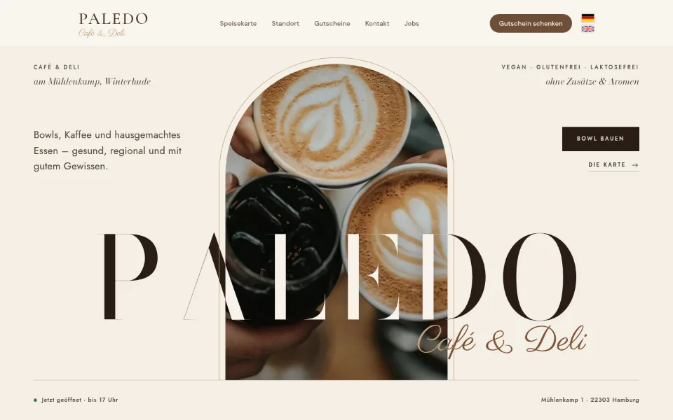
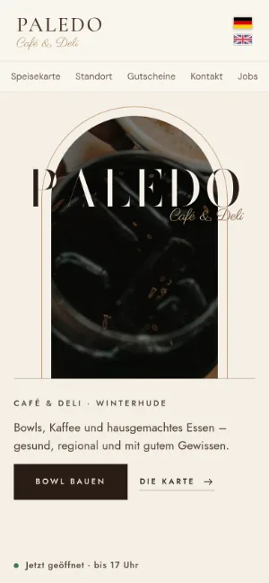

Case Study 01 / 30 · Gastronomie & Hotel
Paledo – Café & Deli
Zweisprachige Café-Seite mit Bowl-Baukasten, Live-Öffnungsstatus und Bogen-Motiv in Creme und Espresso-Braun.


Entwurf ohne Auftrag. Paledo ist kein Kunde; Name und Marke gehören dem Betrieb. Texte, Preise und Zeiten stammen laut README von paledohamburg.de (Stand 1. Oktober 2026), die Fotos sind Platzhalter von Unsplash.
Ausgangslage
Paledo ist ein Café & Deli am Mühlenkamp 1 in Hamburg-Winterhude mit Bowls, Kaffee und hausgemachtem Essen, täglich ab 9 Uhr geöffnet. Gäste wollen die Karte sehen, ihre Bowl zusammenstellen, Gutscheine verschenken und wissen, ob gerade offen ist. Der Entwurf übernimmt Texte, Preise, Zeiten und die Kopfleiste von paledohamburg.de und baut darunter eine eigene Seite in Deutsch und Englisch.
Idee
Grundlage ist das Aurel-Design aus der Fine-Dining-Arena: Aufbau, Bogen-Motiv, Bewegung und Bodoni Moda bleiben, dazu kommen Paledos Creme und Espresso-Braun sowie „Café & Deli“ in der Schreibschrift Parisienne wie im Logo. Im Hero zieht sich das Foto in den Bogen zurück und der Schriftzug schreibt sich darunter; die Abschnitte sind römisch nummeriert. Das Ergebnis ist ruhig und hochwertig, ohne das Lockere eines Cafés zu verlieren.
Was die Seite kann
- Bowl-BaukastenVier Bases, zwei Dressings und ein Topping sind im Grundpreis enthalten, weitere Zutaten und Extras rechnen den Preis live mit, dazu ein Mittagsangebot mit Getränk.
- Bowl teilenDie Auswahl geht per Teilen-Menü des Geräts oder in die Zwischenablage, samt Preis und Link.
- Live-ÖffnungsstatusAus der Zeiten-Tabelle berechnet die Seite „geöffnet bis“ oder „wieder ab“, auch über Mitternacht hinweg, und markiert den heutigen Tag.
- Zwei Sprachenindex.html und en.html teilen sich CSS, JS, Bilder und Schriften; Flaggen oben rechts schalten um, die JS-Texte folgen der Seitensprache.
- GutscheineEine in CSS gebaute Gutscheinkarte, Link zum Gutschein-Anbieter und die Bedingungen.
- Ein Tag bei PaledoFrühstück, Lunch und Matcha & Süßes als Bildstrecke mit Uhrzeiten, dazu Gastgeber-Abschnitt mit Jobs-Kasten.
Dein Betrieb
So eine Seite für dich?
Schreib mir kurz, was du anbietest und was deine Website leisten soll. Du bekommst eine ehrliche Einschätzung, was sie kostet und was sie dir bringen kann.
Projekt anfragen